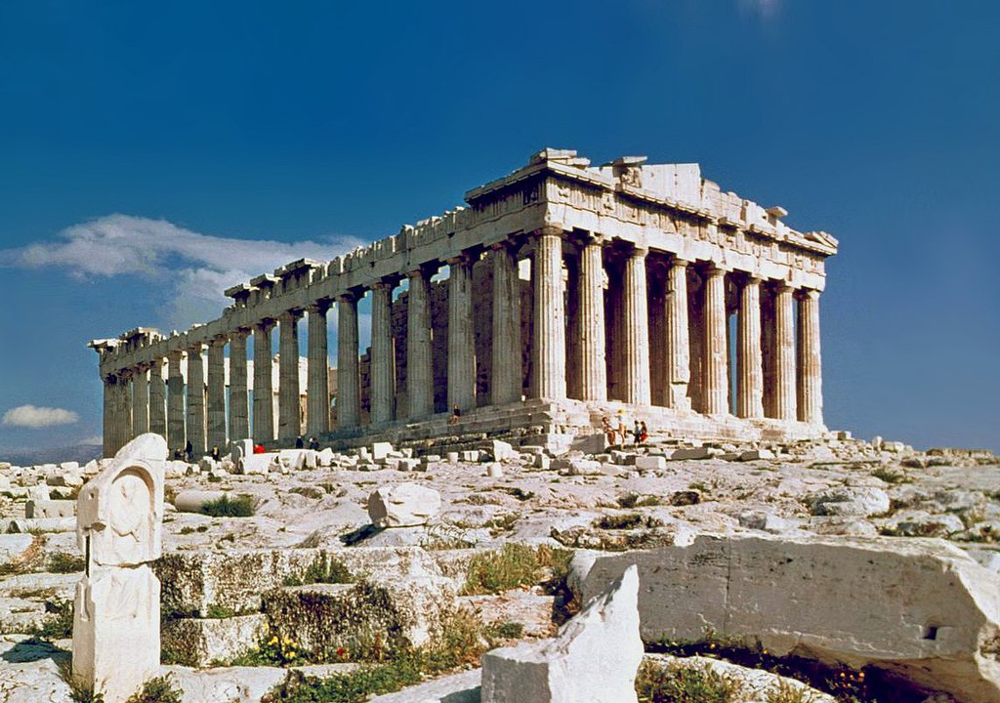
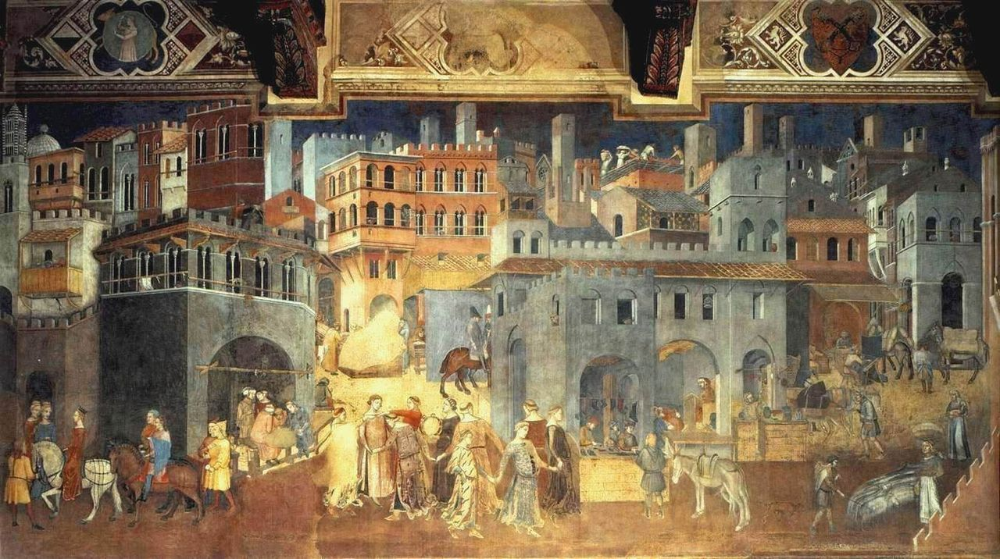
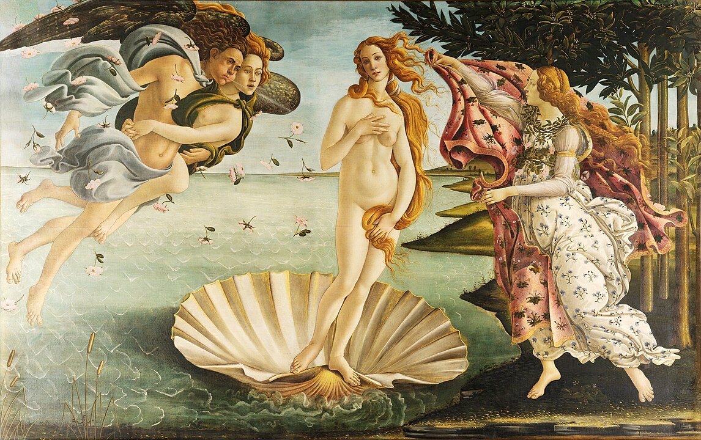
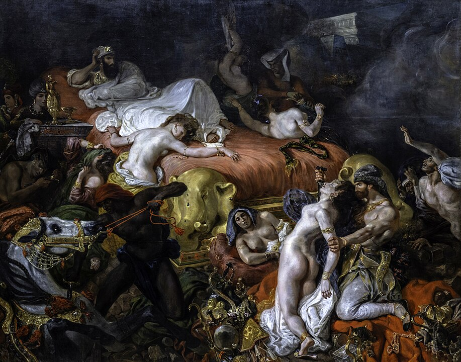
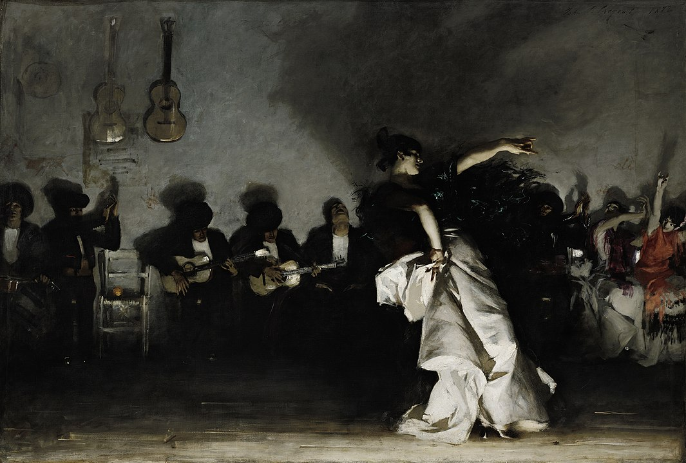

About Art
Art is a diverse range of human activities and products that involve creative or imaginative talent, generally expressive of technical proficiency, beauty, emotional power, or conceptual ideas.
Art Gallery
Explore some of the most iconic artworks throughout history.
Art Periods
Prehistoric Art
The Prehistoric Era (circa 40,000–3,000 BCE) marks the beginning of human creativity, featuring early cave paintings and sculptures. Notable sites like Lascaux and Stonehenge highlight our ancestors' deep connection to nature and spirituality.

Ancient Art
Ancient Art (circa 3000 BCE–500 CE) reflects the cultures of early civilizations like Egypt, Greece, and Rome. It focused on mythology, religion, and daily life, with works ranging from monumental architecture to sculptures and pottery. Notable examples include the Pyramids of Giza and the Parthenon.
Medieval Art
Medieval Art (circa 500–1400 CE) reflects the religious and cultural life of the Middle Ages, focusing primarily on Christian themes. It includes illuminated manuscripts, stained glass, and grand cathedrals, blending Romanesque and Gothic styles. Notable examples include the Notre-Dame Cathedral and the illuminated Book of Kells.
Renaissance
The Renaissance (14th–17th century) was a period of great cultural change in Europe. It focused on humanism, the revival of classical learning, and artistic expression. Key artists include Leonardo da Vinci, Michelangelo, and Raphael.
Baroque
The Baroque period (17th–18th century) is known for its dramatic use of light, color, and movement. Artworks from this era often evoke emotion and grandeur. Famous artists include Caravaggio, Rembrandt, and Peter Paul Rubens.
Impressionism
Impressionism (late 19th century) is characterized by small, thin, yet visible brush strokes, open composition, and emphasis on light and its changing qualities. Notable artists include Claude Monet and Edgar Degas.
Contact
Mail: exploringart@academy.comPhone: +1 (555) 123-4567
Address:
Exploring Art Academy
123 Art Lane
Creative City, CA 90210
Business Hours:
Monday to Friday: 9 AM - 5 PM
Saturday: 10 AM - 4 PM
Sunday:
Closed